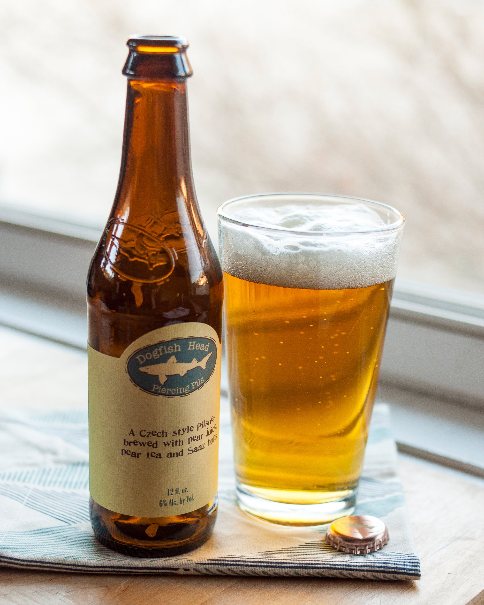

HOME
LAGER
Piercing Pils
Dogfish Head Craft Brewery
Piercing Pils is a Czech Style Pilsner brewed with a White Pear Tea and Pear juice. Both the juice and the tea were added in the kettle during the whirlpool (after the boil) for maximum flavor and aroma contribution. The Pear fruit complexity pierces right through the spicy Czech Saaz hops beautifully, adding a gentle acidity to this pale lager that makes for a crisp refreshing sipper. Amarillo hops add nuanced citrus notes that meld perfectly with the fruit.
Dogfish Head Brewery is a brewing company based in Milton, Delaware founded by Sam Calagione. It opened in 1995 and produces 262,000 barrels of beer annually. Dogfish Head has been a rapidly growing brewery – it grew nearly 400% between 2003 and 2006.
Check out their site HERE 